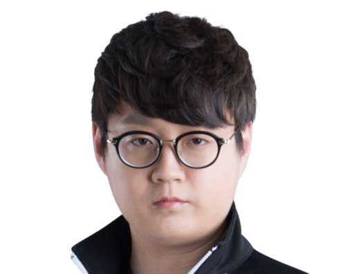

MATA

대한민국의 리그 오브 레전드 프로게이머. 2013 스프링 시즌 MVP 오존 우승의 가장 큰 주역이며,
2014 스프링 시즌부터 시작된 불도저 메타를 완벽하게 카운터 치는 삼성 화이트의 레벨업 메타와
탈수기 운영을 맡는, 삼성 왕조 시작의 일등공신이다. 경기마다 컨디션에 따른 기복이 존재하긴
하지만 시즌 전체를 보면 꾸준한 팀 성적과 꾸준한 개인 성적을 기록하고 있는 서포터이기도 하다.
비록 해외진출을 하면서 통산 기준에선 깨지긴 했지만 국내 복귀 시기를 포함한 현재, 2018년도
스프링까지 국내 정규 시즌 및 포스트시즌에서 데뷔 이후 3위 이하로 내려가 본 적이 없는데서도
이를 잘 알 수 있다. 마타만큼 꾸준함을 자랑하는 서포터는 찾기 힘들 정도이고, 특히 시즌 4 때는
국내외를 막론하고 서포터 No. 1으로 칭송받았다.
고교 시절에는 스타크래프트 프로게이머를 꿈꿨으나, 수능이 끝나고 북미 서버에서 LoL을
시작했다고 한다. 이후 한국 서버로 옮겨왔지만, 애초에는 랭크 욕심 없이 트롤링이나 할
생각이었다고 한다(…). 근데 자꾸 아는 사람과 같은 팀으로 큐가 잡히는 와중에 살짝 진지 빨고
솔랭을 했더니 어느새 고랭커 아마 고수가 되어 입단 제의를 받게 됐다고 한다.